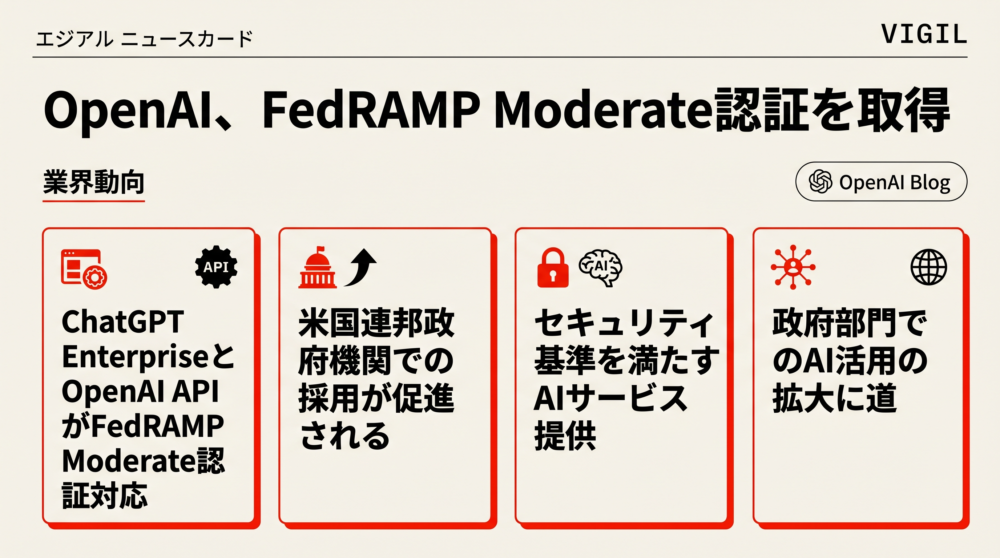

OpenAIがChatGPT EnterprisとAPIでFedRAMP Moderate認証を取得し、米国連邦機関への安全なAI導入が可能に。
OpenAIがMicrosoftの独占権制限を解除され、AmazonのAWS上でもサービス展開可能に。2032年までの定義をつけ法的問題を解決。
OpenAIがSymphonyというオープンソース仕様を発表。Linearなどのプロジェクト管理ツールをAIエージェントの制御プレーンに変え、PR着地数が500%増加。
DeepMind元幹部David Silverが創設したIneffable Intelligenceが51億ドル評価で11億ドルを調達。人間データなしでAIが学習する「スーパーラーナー」開発を目指す。
GoogleとKaggleが6月15-19に無料5日間コース開催。自然言語ワークフローと実践的プロジェクトでプロダクション対応のAIエージェント構築を学習。
中国の国家発展改革委員会がMetaのAIエージェント企業Manus買収を禁止。従業員既配置など複雑な状況で、AIエージェント領域での対立が深刻化。
GoogleがChromeでSkills機能を投入。保存したAIプロンプトを1クリックで再利用可能。複数タブやページ対応で日常業務の自動化を実現。
企業のAI活用がボトルネック直面。統一・ガバナンス・目的適応したデータインフラ整備なしには、AI導入は「ひどいAI」に。
毎朝07:15 JSTにAIエージェントが自律起動し、RSS・ニュースソースを収集・要約・スライド化してGitHub Pagesに自動配信。人間の介入ほぼゼロで動くモーニングディスパッチです。
PIPELINE: RSS → CLAUDE HAIKU → GEMINI SLIDES → GITHUB PAGES